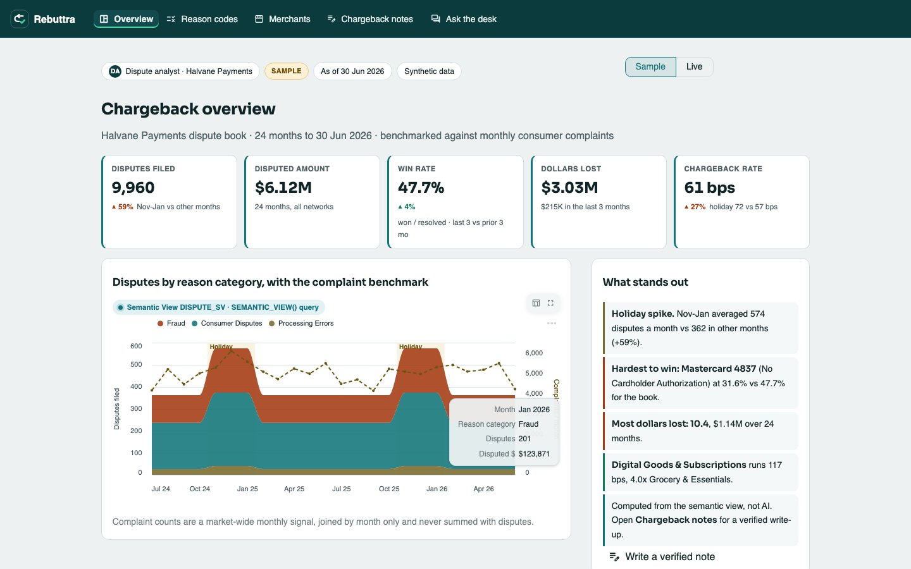
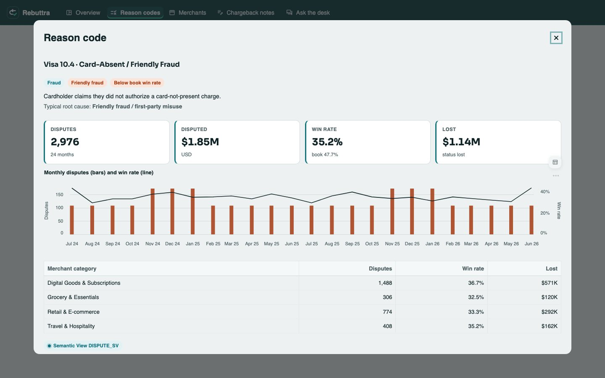
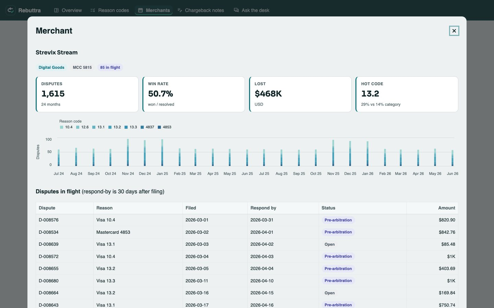
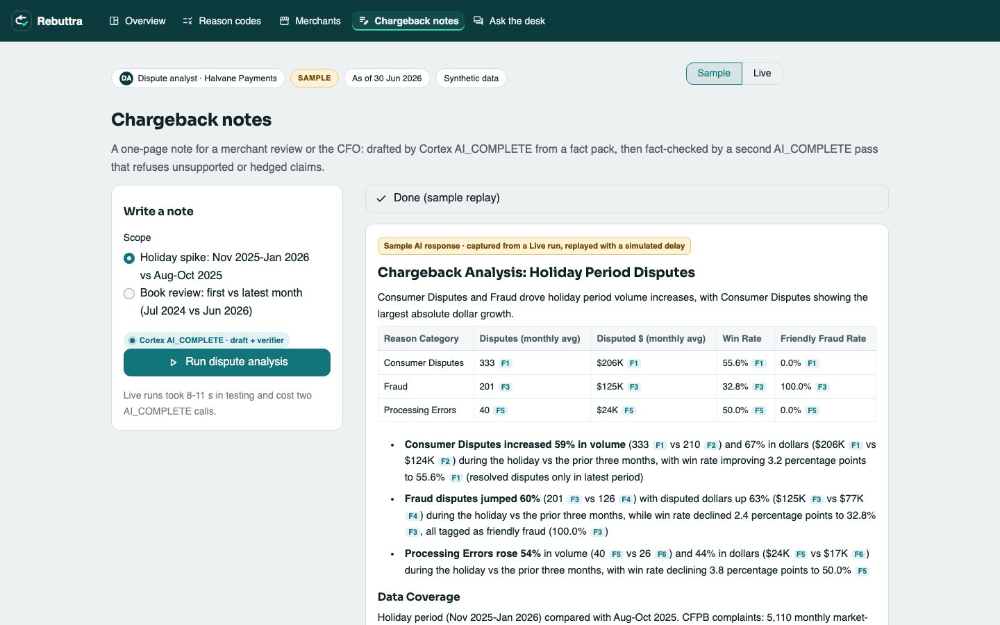
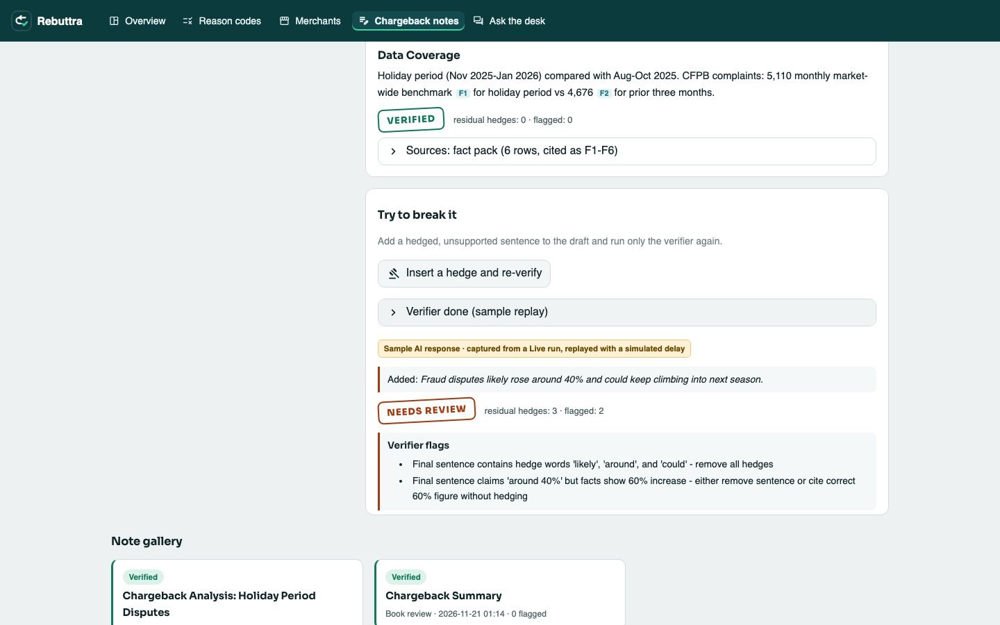
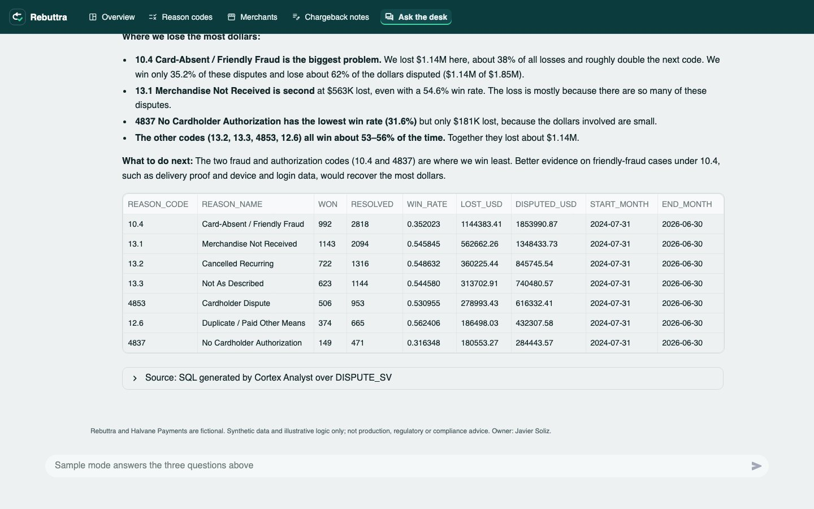

Overview
Disputes, dollars, win rate and chargeback rate for 24 months, with the holiday spike shaded and the complaint benchmark on its own axis.
Snow Pack · Payments · Operations
Every holiday season, a card processor's dispute book jumps. The dispute-ops lead has to tell merchants and the CFO which reason codes drove it, how much is friendly fraud, and where the team is losing money. This example reads the book by reason code, network and merchant, sets it against a monthly consumer-complaint benchmark, and has Cortex AI_COMPLETE draft the note. A second AI pass then checks every figure and refuses anything unsupported or hedged.
Disputes, dollars, win rate and chargeback rate for 24 months, with the holiday spike shaded and the complaint benchmark on its own axis.
Every Visa and Mastercard code, sortable and filterable, with a panel per code: trend, merchant-category split and root cause.
A chargeback-rate heatmap and a merchant table that flags reason codes running far above the category's mix.
An AI chargeback note that cites its sources and gets a Verified stamp, plus a Cortex Agent that answers in plain English and shows its SQL.






sql/setup.sql generates 9,960 disputes over 24 months with a fixed hash seed, plus a monthly complaint benchmark. Same rows every run.
DISPUTE_SV gives the book its business meaning: reason code, network, merchant category, month, win rate (won ÷ resolved) and a complaint metric that is never summed.
The app builds a small fact pack, has AI_COMPLETE write the note using only those numbers, and runs a second AI_COMPLETE pass as a fact-checker. Notes and verdicts are stored in DISPUTE_REPORTS.
DISPUTE_AGENT uses Cortex Analyst on DISPUTE_SV, so questions and notes share one definition of every metric.
| Snowflake capability | Where you see it | Measured in Live mode |
|---|---|---|
Semantic Views (SEMANTIC_VIEW() query) | Overview, Reason codes, Merchants heatmap | Sub-second per screen |
| Cortex AI_COMPLETE (draft + verifier) | Chargeback notes, Try to break it | 8–11 s per note, 3–6 s per re-verify |
| Cortex Agents + Cortex Analyst | Ask the desk | 25–34 s per answer |
| Streamlit in Snowflake | The app itself (or run it locally) | Warehouse runtime, Streamlit 1.52.2 |
sql/setup.sql in a Snowsight worksheet (about 20 s).app/ files to the stage and run sql/deploy_streamlit.sql, or run the app locally with key-pair auth.sql/setup_cfpb.sql swaps in real CFPB complaint data.sql/cleanup.sql removes the database, warehouse and role.Step-by-step instructions, the object list, cost and limitations are in the README.
DISPUTE_FACT without changing any objects, and show which columns line up."